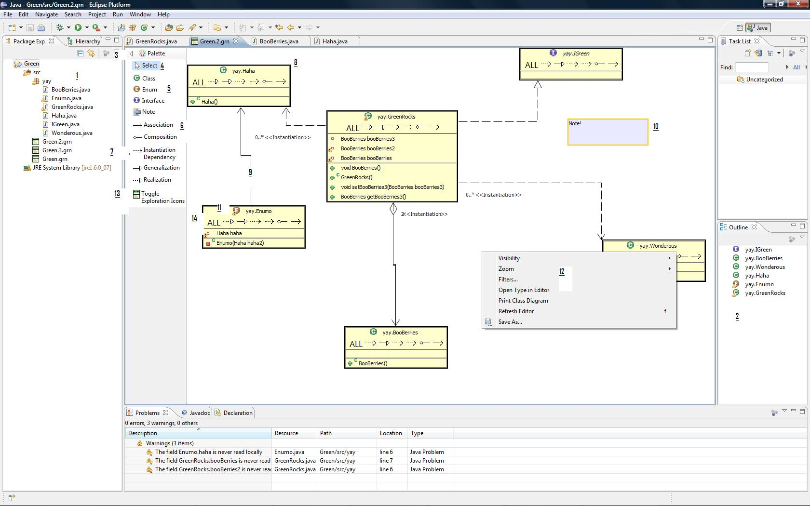

This page explains the majority of Green's features a user may see from a typical set of open views in Eclipse.

- Package Explorer View - In this
view, context menus of Java elements contain the Green UML submenu; it is
used to add the selected element(s) to diagrams.
- Outline View - This view shows
a list of Java elements in the diagram.
- This arrow toggles the auto-hide
mode for the palette. When in auto-hide mode, placing the cursor over the sidebar
reveals the palette. Note that the Bar can show on either side of the editor.
- Selection Tool - Used to select
elements in the diagram.
-
Model Generation Tools - Selecting one of these tools and clicking in the
diagram will create the selected type of element. (With the exception of Notes.)
- Relationship Generation Tools - These tools will create the selected type of relationship
in the diagram. After selecting the appropriate tool, click on a Java element
to indicate it as the relationship's source, then click on a Java element
to indicate it as the relationship's target. To cancel a relationship generation
after a source has been chosen, press the 'Escape' key.
- Relationship Flavors - The downward
arrow indicates that a particular type of relationship has multiple flavors.
Clicking the arrow will allow user to select which flavor will remain active.
- Type Boxes - Diagram representation
of Java elements.
- Relationship Arcs - Representation
of relationships. Additional labels may be present on the arcs depending on
the relationship. (see Routing for information on manipulating the look and
feel of relationship arcs.)
- Note Boxes - Notes are not representations
of Java elements, however, they are included to facilitate diagraming by
providing a method of making annotations, etc..
- Adornments - Icons of Java elements
can be adorned with a black and yellow exclamation point ("!") or
a red and white cross ("x"). "!" indicates a compiler
warning, while "x" indicates a compiler error. When either of these
adornments are present, QuickFix options are added to the element's standard
context menu.
- Context menus - see Context
Menus page.
- Toggle Exlporation Icons- Shows or hides the
Incremental Exploration Icons within the Type boxes.
- The Incremental Exploration Icons- These
allow you to incrementally explore a type for certain relationships.